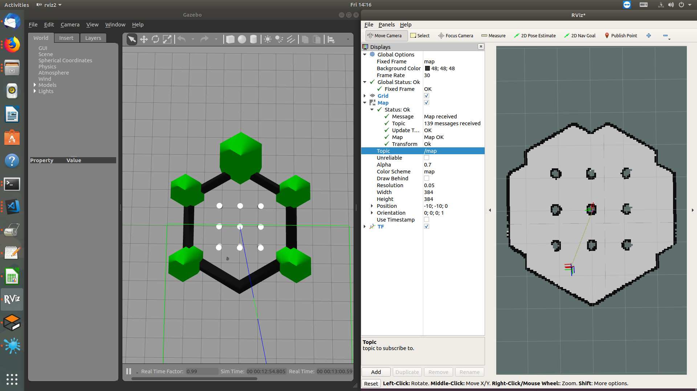

1. Overview
The ROS 2 Navigation System is the control system that enables a robot to autonomously reach a goal state, such as a specific position and orientation relative to a specific map. Given a current pose, a map, and a goal, such as a destination pose, the navigation system generates a plan to reach the goal, and outputs commands to autonomously drive the robot, respecting any safety constraints and avoiding obstacles encountered along the way.
2. Running the demo
The nav2_bringup package is an example bringup system for navigation2 applications.
Notes:
* OS Requirements: Ubuntu 18.04
* It is recommended to start with simulation using Gazebo before proceeding to run on a physical robot
2.1 Launch Navigation2 with Turtlebot3 in Gazebo simulator
Terminal 1: Launch Gazebo and Rviz2
<<<<<<< HEAD Example: See turtlebot3_gazebo models for details ======= Example: See turtlebot3_gazebo models for details
443553cfcb0ae096494dfd24d761e3236110b42e
source /opt/robot_sdk/robot_sdk_setup.bash
export GAZEBO_MODEL_PATH=$GAZEBO_MODEL_PATH:~/robot_sdk/sdk_ws/device_ws/src/turtlebot3/turtlebot3_simulations/turtlebot3_gazebo/models/
ros2 launch nav2_bringup gazebo_rviz2_launch.py world:=$HOME/robot_sdk/sdk_ws/device_ws/src/navigation2/navigation2/nav2_system_tests/words/turtlebot3_ros2_demo.world

Terminal 2: Launch Turtlebot3 transforms
source /opt/robot_sdk/robot_sdk_setup.bash
export TURTLEBOT3_MODEL=burger
ros2 launch turtlebot3_bringup turtlebot3_state_publisher.launch.py
Example: See turtlebot3_gazebo for details
Terminal 3: Launch map_server and AMCL
source /opt/robot_sdk/robot_sdk_setup.bash
# Set the tf publisher node to use simulation time or AMCL won't get the transforms correctly
ros2 param set /robot_state_publisher use_sim_time True
# Launch map_server and AMCL, set map_type as "occupancy" by default.
ros2 launch nav2_bringup nav2_bringup_1st_launch.py map:=$HOME/robot_sdk/sdk_ws/device_ws/src/navigation2/navigation2/nav2_system_tests/maps/map_circular.pgm map_type:=occupancy use_sim_time:=True
# TODO: move the map to somewhere else.
In RVIZ2:
* Make sure all transforms from odom are present. (odom->base_link->base_scan)
* Localize the robot using “2D Pose Estimate” button.
Terminal 4:
Run the rest of the Navigation2 bringup
source /opt/robot_sdk/robot_sdk_setup.bash
ros2 launch nav2_bringup nav2_bringup_2nd_launch.py use_sim_time:=True
Terminal 5:
Set the World Model and the two costmap nodes to use simulation time.
source /opt/robot_sdk/robot_sdk_setup.bash
ros2 param set /world_model use_sim_time True
ros2 param set /global_costmap/global_costmap use_sim_time True
ros2 param set /local_costmap/local_costmap use_sim_time True
Notes:
* The robot should be localized using the “2D Pose Estimate” button in Rviz2
before enabling use_sim_time. Otherwise, the ros2 param set commands on the
costmaps will hang until that is done.
* Setting use_sim_time has to be done dynamically after the nodes are up due to this bug:https://github.com/ros2/rclcpp/issues/595.
* Sim time needs to be set in every namespace individually.
* Sometimes setting use_sim_time a second time is required for all the nodes to get updated.
* IF you continue to see WARN messages like the ones below, retry setting the use_sim_time parameter.
[WARN] [world_model]: Costmap2DROS transform timeout. Current time: 1543616767.1026, global_pose stamp: 758.8040, tolerance: 0.3000, difference: 1543616008.2986
[WARN] [FollowPathNode]: Costmap2DROS transform timeout. Current time: 1543616767.2787, global_pose stamp: 759.0040, tolerance: 0.3000, difference: 1543616008.2747
In RVIZ2:
* Add "map" to subscribe topic "/map".
* Localize the robot using "2D Pose Estimate" button.
* Send the robot a goal using "2D Nav Goal" button.
* Make sure all transforms from odom are present. (odom->base_link->base_scan)
2.2 Launch Navigation2 on a Robot
Terminal 1: Run Micro-XRCE-DDS Agent for OpenCR
cd ~/turtlebot3 && MicroXRCEAgent serial /dev/ttyACM0
Terminal 2: Run Micro-XRCE-DDS Agent for Lidar
cd ~/turtlebot3 && MicroXRCEAgent udp 2018
Terminal 3: Run Lidar application
~/turtlebot3/turtlebot3_lidar
Terminal 4: Launch robot turtlebot3_node
source /opt/robot_sdk/robot_sdk_setup.bash
export TURTLEBOT3_MODEL=waffle
ros2 launch turtlebot3_bringup robot.launch.py
Terminal 5: Run AMCL and Map Server
source /opt/robot_sdk/robot_sdk_setup.bash
export TURTLEBOT3_MODEL=waffle
ros2 launch nav2_bringup nav2_bringup_1st_launch.py map:=/full/path/to/map.yaml
Terminal 6: Run RVIZ2
ros2 run rviz2 rviz2
In RVIZ2:
Add components: map, scan, tf, global_costmap, local_costmap
Make sure all transforms from odom are present.
Localize the robot using 2D Pose Estimate button.
Terminal 7: Run the rest of the Navigation2 bringup
source /opt/robot_sdk/robot_sdk_setup.bash
ros2 launch nav2_bringup nav2_bringup_2nd_launch.py
In RVIZ2:
Send the robot a goal using 2D Nav Goal button.
If nothing happens, first retry localizing the robot using the 2D Pose Estimate button, then retry sending the goal using the 2D Nav Goal button.
3. Known issues
* This stack and ROS2 are still in heavy development and there are some bugs and stability issues being worked on, so please do not try this on a robot without taking heavy safety precautions. THE ROBOT MAY CRASH!
* For a current list of known issues, see https://github.com/ros-planning/navigation2/issues.
4. ToDo
Add additional maps and examples.